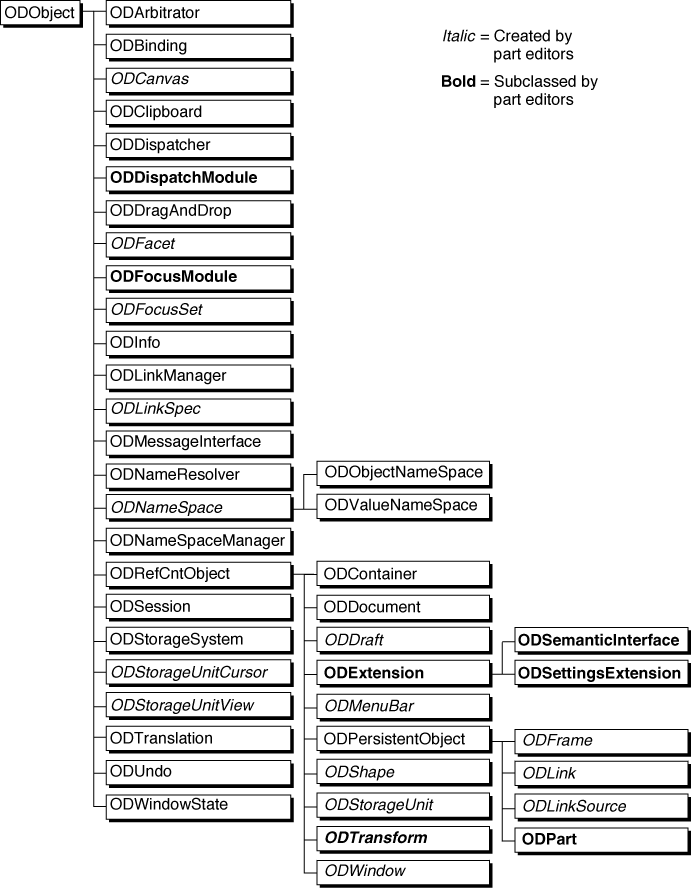
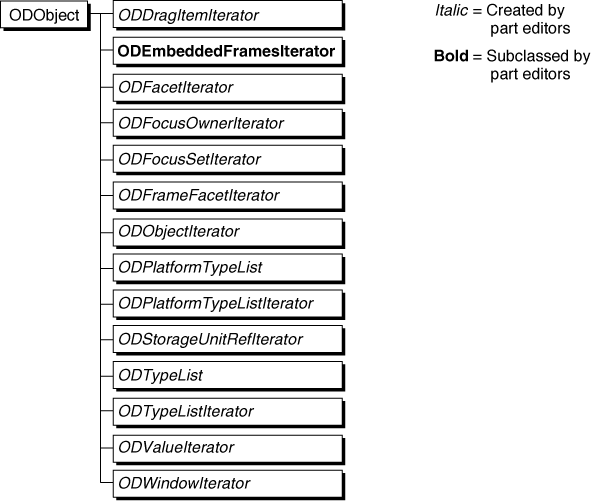

The OpenDoc Class Library
OpenDoc is a set of shared libraries with a largely platform-independent, object-oriented programming interface. This section introduces the classes implemented in the OpenDoc libraries and the design goals behind them.The interfaces to all of OpenDoc's classes are specified in the Interface Definition Language (IDL), a programming-language-neutral syntax for creating interfaces. IDL is part of the System Object Model (SOM), a specifi-
cation for object binding at runtime. IDL interfaces are typically compiled separately from implementation code, using a SOM compiler. See the section "Developing With SOMobjects and IDL" for more information.Because OpenDoc uses IDL and SOM, part editors and other OpenDoc objects that have been created with different compilers or in completely different programming languages can nevertheless communicate properly with each other. Furthermore, they can be independently revised and extended and still work together.
For more complete information on the OpenDoc class library, including detailed descriptions of all public OpenDoc classes and methods, see the OpenDoc Class Reference.
A Set of Classes, Not a Framework
OpenDoc is a set of classes whose objects cooperate in the creation and manipulation of compound documents. It is designed to be as platform neutral as possible. The object-oriented library structure, in which object fields are private, facilitates the replacement of existing code in a modular manner. Also, by using abstract classes and methods, OpenDoc defines a structure for part editors while specifying as little as possible about their internal functioning.The OpenDoc class library is not an object-oriented application framework in the full sense of the word. That is, even though the design of OpenDoc allows you to create a part editor, it does so at a lower level, and without forcing as much adherence to interface and implementation as is typical for an application framework.
You can create a part editor just as effectively in either way, however: directly through the OpenDoc library interfaces, or indirectly through the interfaces of a framework such as the OpenDoc Development Framework (ODF), a part-editor framework that allows you to develop simultaneously for both the Mac OS and Windows platforms. The main difference is that, if you use a part-editor framework, you need implement less code yourself, and it is easier to ensure consistency in the final product.
The principal classes in the OpenDoc class hierarchy are shown in Figure 2-1. All classes are derived from the superclass
ODObject, itself a subclass ofsomObject, the fundamental SOM superclass (not shown). The figure shows these categories of classes:Figure 2-1 The OpenDoc class hierarchy (principal classes)
- Names in bold represent abstract superclasses that your part editor is likely to subclass.
- Names in italics represent classes whose objects your part typically creates for its own use. You create these objects by calling methods described in the section "Factory Methods".
- Names in plain text represent classes whose objects you part editor calls but typically never has to create; they are created for you by OpenDoc.

Classes shown in Figure 2-2 are support classes, consisting mostly of iterators and simple sets. They are all direct subclasses of
- Runtime relationships
- For an illustrated discussion of the relationships of
the principal OpenDoc objects in terms of runtime references among them, see the section "Runtime Object Relationships".
ODObject. (A separate set of specialized OpenDoc support classes, used solely for scripting, is shown in Figure 9-2.)Figure 2-2 OpenDoc class hierarchy (support classes)

Compared to some application frameworks, there is little inheritance in the hierarchy represented in Figure 2-1 and Figure 2-2; OpenDoc instead makes extensive use of object delegation, in which objects unrelated by inheritance cooperate to perform a task. This relatively flat inheritance structure preserves the language-neutral flavor of OpenDoc and improves ease of maintenance and replaceability.The OpenDoc classes can be divided into three groups, based on how a part editor might make use of them:
The following sections summarize these groups of classes.
- the class (
ODPart), which you must subclass and implement to create your part editor- the bulk of the implemented OpenDoc classes, whose objects are created either by your part editor or by OpenDoc, that your part editor calls to perform its tasks
- the classes that you can subclass and implement to extend OpenDoc
Classes You Must Subclass
The OpenDoc classes listed in this section are abstract superclasses that you are intended to subclass if you wish to implement their capabilities.The Class ODPart
The classODPartis central to OpenDoc; it is the one class that you must subclass to create a part editor.ODPartrepresents the programming interface that your part editor presents to OpenDoc and to other parts.
ODPartis an abstract superclass with approximately 60 defined methods. When you subclassODPart, you must override all of its methods plus a few inherited methods; however, you need to provide meaningful implementations only for those methods that represent capabilities actually supported by your part editor. The rest can be stub implementations.There is one additional class that you must subclass and implement if your part is a container part. You must provide an iterator class (a subclass of the abstract superclass
ODEmbeddedFramesIterator) to allow callers to access all of the frames directly embedded in your part.Classes for Extending OpenDoc
OpenDoc provides these classes specifically for enhancing its features:
- The class
ODExtensionis the abstract superclass from which extensions to OpenDoc are defined; OpenDoc allows you to add new methods to existing classes by associating objects of classODExtensionwith the specific class that they extend. The classesODSemanticInterfaceandODSettingsExtensionare examples of currently existing subclasses ofODExtension.- The class
ODSemanticInterface, when subclassed, represents the interface through which a part receives semantic events, thus allowing it to be scriptable.- The class
ODSettingsExtension, when subclassed, represents an object with which your part editor can create and display a Settings dialog box for your part editor.- The class
ODDispatchModuleis used to dispatch certain types of events (such as keystroke events) to part editors. You can provide for dispatching of new types of events or messages to your part editor by subclassingODDispatchModule.- The class
ODFocusModuleis used to describe a particular type of focus (such as the selection focus). You can provide new types of focus for your part editor by subclassingODFocusModule.- The class
ODTransformrepresents a graphical transformation matrix used for drawing. You can subclass it to extend the kinds of transformations it can perform. This class is somewhat different from the other classes in this category, because it can be used as is; for this reason, the class also appears in the next section.Classes You Can Use
The OpenDoc classes listed in this section implement most of the OpenDoc features that your part editor uses. By using or creating objects of these classes, your part can function within an OpenDoc document and can embed other parts.Abstract Superclasses
These classes are never directly instantiated. The classesODPartandODEmbeddedFramesIterator, mentioned in the previous section, are abstract superclasses. Other abstract superclasses are mentioned in the section "Classes for Extending OpenDoc".The abstract superclasses in the following list are special; they define the basic inheritance architecture of OpenDoc. Not only would you not instantiate these classes, but you would probably never directly subclass them. When developing a part editor, you would use (or further subclass) one of their existing subclasses.
ODObject. This is the abstract superclass for most of the principal OpenDoc classes. All subclasses ofODObjectdefine objects that are extensible.ODRefCntObject. This is the abstract superclass for reference-counted objects--
objects that maintain a count of how many other objects refer to them, so that OpenDoc can manage memory use efficiently.ODPersistentObject. This is the abstract superclass for persistent objects--objects whose state can be stored persistently.Implemented Classes
These classes are implemented in ways unique to each platform that supports OpenDoc. Some represent objects that are created only by OpenDoc, whereas others represent objects that your part editor may need to create.
- The session object. The class
ODSessionrepresents the user's opening of and access to a single OpenDoc document.- The binding object. The class
ODBindingrepresents the object that performs the binding of part editors to the parts in a document.- Storage classes. The primary classes of objects associated with document storage are the class
ODStorageSystemand the set of classes (ODContainer,ODDocument,ODDraft, andODStorageUnit)that constitute a container suite. The container-suite objects all work closely together and are implemented differently for each platform or file system.- Data-interchange classes. The classes
ODLink,ODLinkManager,ODLinkSource,ODLinkSpec,ODDragAndDrop, andODClipboardall relate to transfer of data from one location to another. These objects do not represent documents, but they nevertheless use storage units to hold the data they transfer.- Drawing-related classes. The imaging classes
ODCanvas,ODShape, andODTransformrepresent imaging structures in a given graphics system. The classesODWindowStateandODWindowrepresent windows on a given platform. The layout classesODFrameandODFacetrepresent the frame and facet structures that define the layout of embedded parts.- Event-handling classes. The classes
ODArbitratorandODDispatchercontrol what kinds of user events are sent to which part editors during execution. The classesODMenuBarandODUndogive part editors access to the menu bar and to previous states of themselves, respectively.- Semantic-event classes. Besides the abstract class
ODSemanticInterface(which must be subclassed), the classesODNameResolverandODMessageInterfaceare associated with sending or receiving semantic events (scripting messages), and connecting to a scripting system. (Figure 2-1 does not show the entire object hierarchy involved with
semantic events and scripting; see Figure 9-1 for a more complete picture.)Service Classes
These classes exist mainly as services for other classes to use:
- The
ODStorageUnitCursorandODStorageUnitViewclasses facilitate access to specific values in specific storage units.- The
ODFocusSetclass provides convenient grouping of foci (access to shared resources such as the keyboard or menu bar) for activation and event handling.- The
ODNameSpaceManagerandODNameSpaceclasses provide convenient storage for attribute/value pairs. The classesODObjectNameSpaceandODValueNameSpace, subclasses ofODNameSpace, provide name spaces for OpenDoc objects and for data, respectively.- The
ODInfoclass provides the Part Info dialog box, which your part displays in response to a user selection from the Edit menu.- The
ODTranslationclass provides platform-specific translation between data formats.- The object descriptor classes (shown in Figure 9-2) provide scripting support in the form of an object-oriented encapsulation of Apple event descriptor structures.
- Many classes have associated iterator classes and list classes that are used for counting through all related instances of the class.